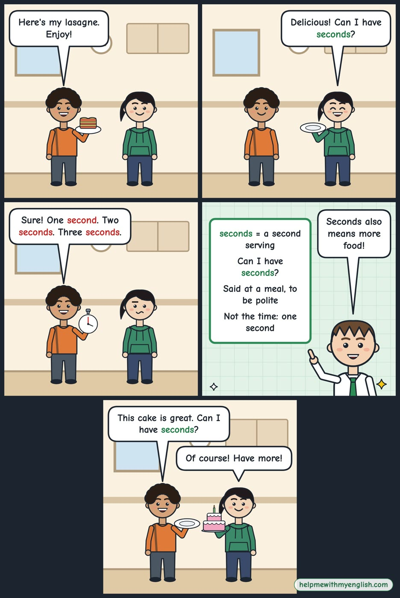

Can I have seconds?
Can I have a second serving of the food?
This lasagne is delicious. Can I have seconds?
Tip: Say it at a meal, usually at someone's home or with friends or family, after you've finished your first plate; it's a compliment too, so don't use it in a restaurant where you pay per dish.
Hear it in conversation
Workbook
1. What does it mean?
In this conversation, what does 'Can I have seconds?' mean?
2. Fill the gap
Ken's curry was so good at the party that half the guests went back and asked for .
3. Choose the best reply
Olena: You've hardly touched your pasta. Do you want some more?
4. Your turn: speak
Tell me about a meal you've had at someone's home that you really enjoyed.
Show an example answer
Last month my friend cooked a big vegetable stew for her family and invited me. It was so tasty that I asked, 'Can I have seconds?' before I had even finished my first bowl. She was really pleased, and we ended up talking at the table for hours.
Answer key: Can I have seconds?
- 1. A. Can I have another portion of the food?
- 2. seconds
- 3. C. Actually, it's delicious. Can I have seconds once I finish this?
- 4. Example: Last month my friend cooked a big vegetable stew for her family and invited me. It was so tasty that I asked, 'Can I have seconds?' before I had even finished my first bowl. She was really pleased, and we ended up talking at the table for hours.
See it in a comic
